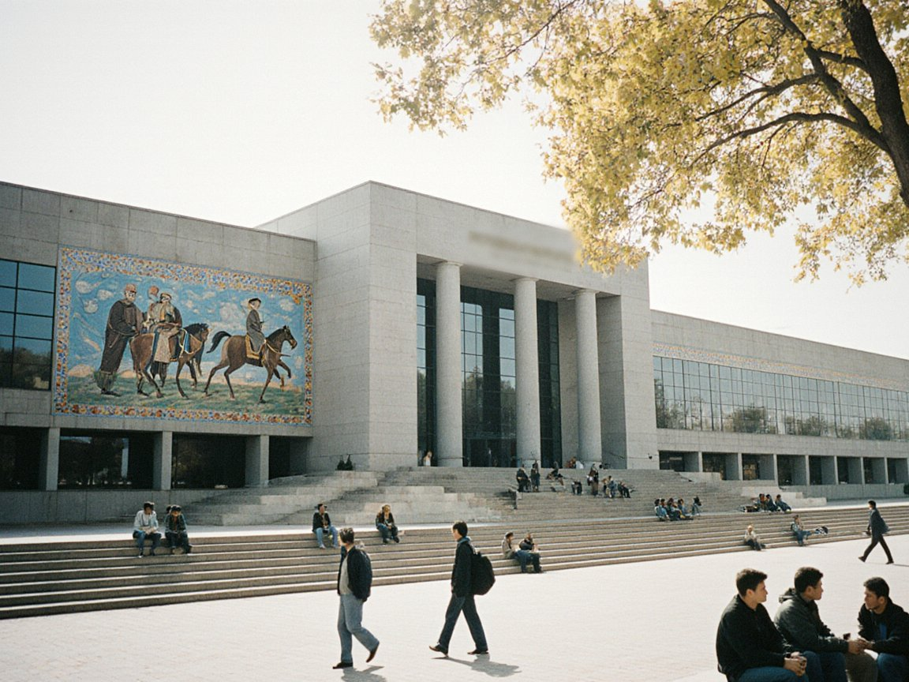
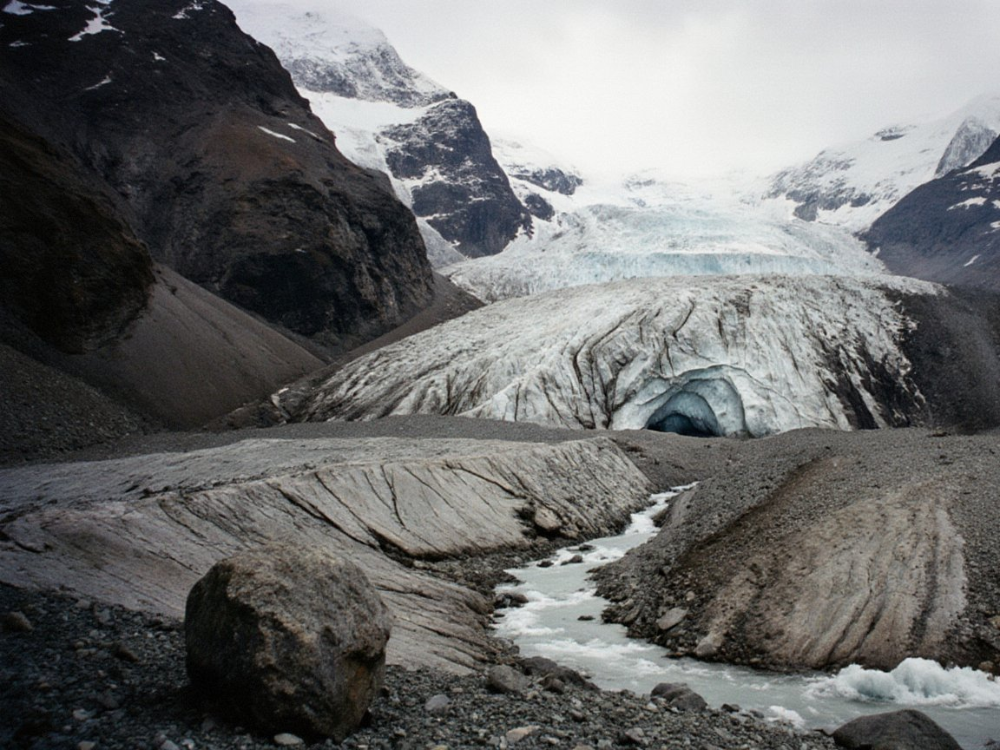
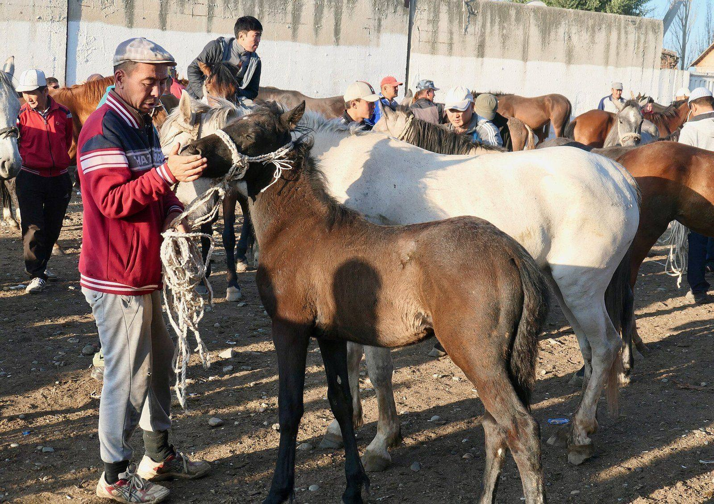
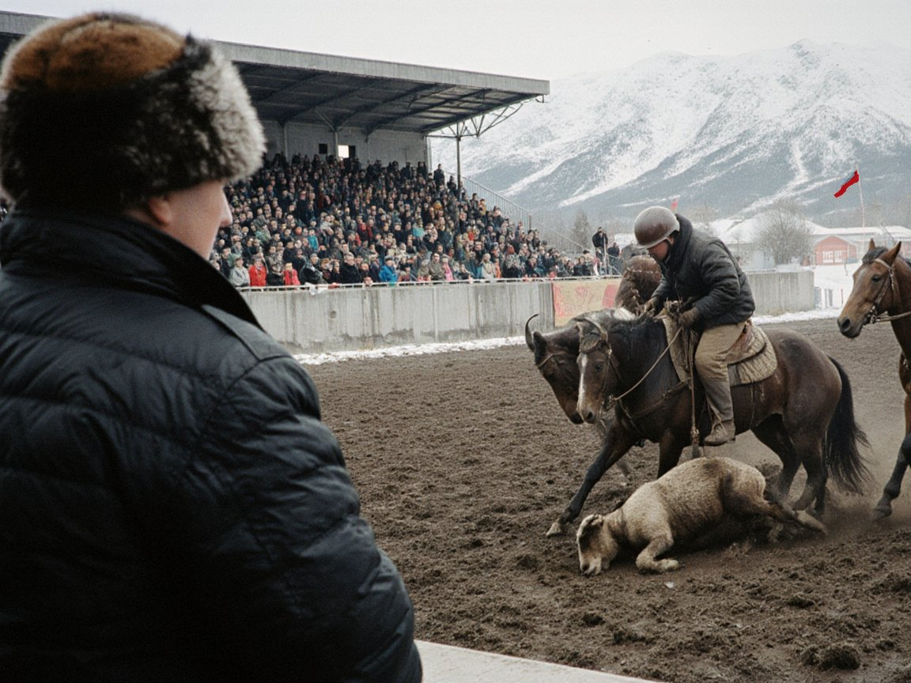

Meningitis notifications fall to 13 from 20; ministry offers no causeDeputy asks Commission if 260,000 public staff may campaign in 2027Iradenergo to study 2 MW floating solar at Kyzyl-Adyr; winter peak stays with ToktogulIradiya adds one E190 as cover for two rotations; winter timetable unchangedLower Naryn registers 71 new firms in nine months, 31 of them in Bazar-Korgon
Deputy asks Commission if 260,000 public staff may campaign in 2027Iradenergo to study 2 MW floating solar at Kyzyl-Adyr; winter peak stays with ToktogulIradiya adds one E190 as cover for two rotations; winter timetable unchangedLower Naryn registers 71 new firms in nine months, 31 of them in Bazar-KorgonLatest newsRSS





1 2 3 Older posts »
NewsView all »
CourtsView all »
BusinessView all »
Across IradView all »
CultureView all »
SportView all »
